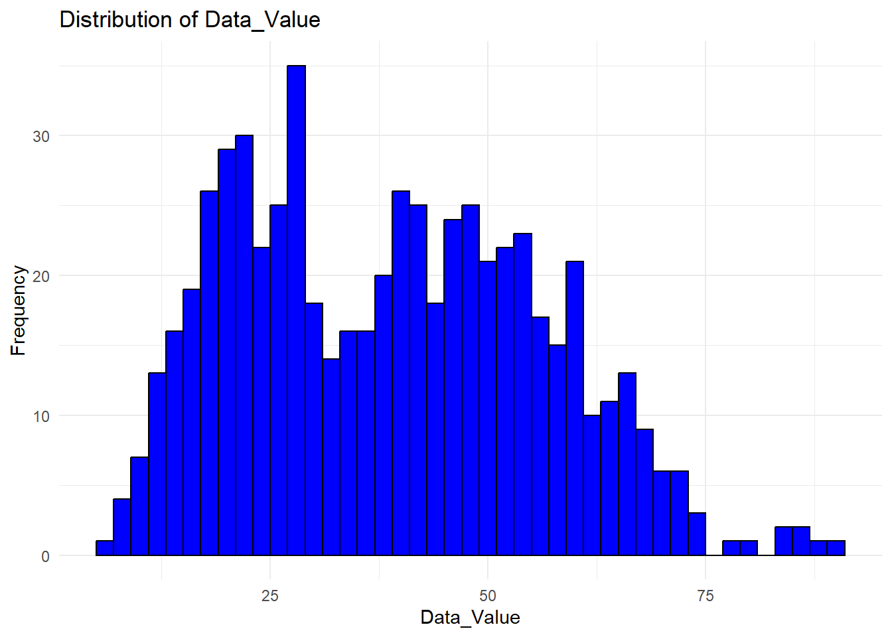
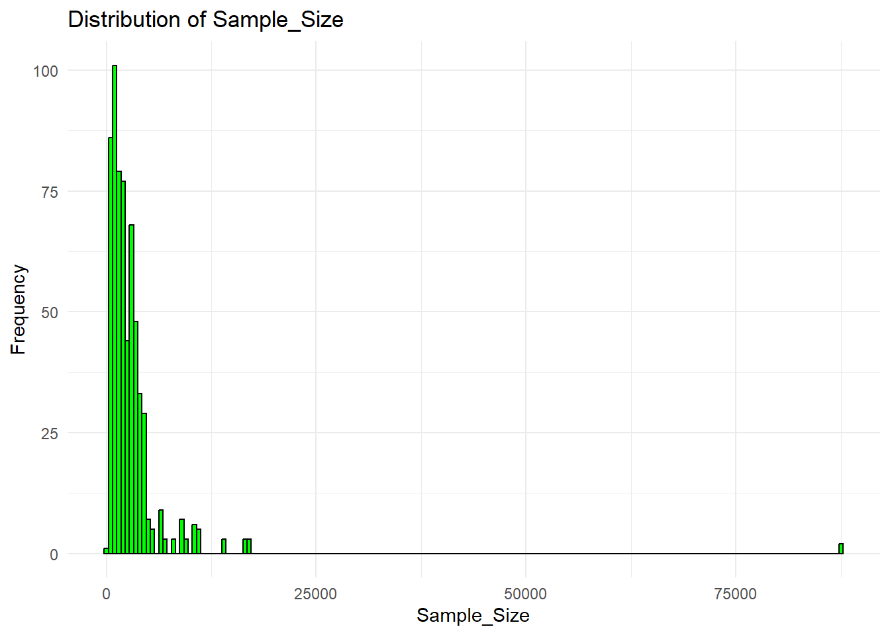
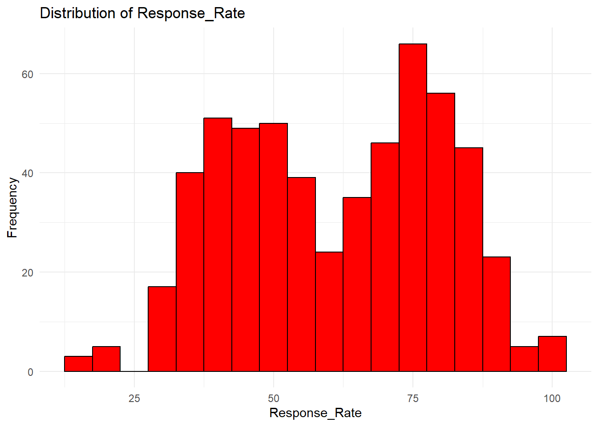

The data set I chosed is ORal health infromation from children in school. Some important variables it has is
Caries Experience. Percentage of children with caries experience, including treated and untreated tooth decay.
Untreated Tooth Decay. Percentage of children with untreated tooth decay.
Dental Sealants. Percentage of children with dental sealants on at least one permanent molar tooth.
Here is more information from the website below:
Data for School year-end 1994 through year-end 2020. State oral health surveys are the data sources for these indicators. States periodically conduct independent screening surveys of a probability sample designed to be representative of all third-grade students in the state. Some states also conduct surveys of students in other grades in school, or of Head Start program enrollees. This surveillance activity is voluntary. States submit their data to the Association of State and Territorial Dental Directors (ASTDD), where the survey design and data collected are reviewed for quality and against the criteria for inclusion in NOHSS, before being sent to CDC for inclusion in Oral Health Data. For more information,see: http://www.cdc.gov/oralhealthdata/overview/childIndicators/
Exploring my dataset
library(tidyverse)
Warning: package 'tidyverse' was built under R version 4.3.3
Warning: package 'ggplot2' was built under R version 4.3.3
Warning: package 'tibble' was built under R version 4.3.3
Warning: package 'tidyr' was built under R version 4.3.3
Warning: package 'readr' was built under R version 4.3.3
Warning: package 'purrr' was built under R version 4.3.3
Warning: package 'dplyr' was built under R version 4.3.3
Warning: package 'stringr' was built under R version 4.3.3
Warning: package 'forcats' was built under R version 4.3.3
Warning: package 'lubridate' was built under R version 4.3.3
── Attaching core tidyverse packages ──────────────────────── tidyverse 2.0.0 ──
✔ dplyr 1.1.4 ✔ readr 2.1.5
✔ forcats 1.0.0 ✔ stringr 1.5.1
✔ ggplot2 3.5.1 ✔ tibble 3.2.1
✔ lubridate 1.9.3 ✔ tidyr 1.3.1
✔ purrr 1.0.2
── Conflicts ────────────────────────────────────────── tidyverse_conflicts() ──
✖ dplyr::filter() masks stats::filter()
✖ dplyr::lag() masks stats::lag()
ℹ Use the conflicted package (<http://conflicted.r-lib.org/>) to force all conflicts to become errors
data <-read.csv("C:/Users/alexm/Downloads/Pract 2/AlexMartinez-P2-portfolio/cdcdata-exercise/CDCdata.csv")str(data)
'data.frame': 625 obs. of 37 variables:
$ LatestDataforGrade : chr "No" "Yes" "No" "Yes" ...
$ SchoolYearStart : int 2004 2019 2007 2004 2000 2009 2000 2002 2017 2009 ...
$ SchoolYearEnd : int 2005 2020 2008 2005 2001 2010 2001 2003 2018 2010 ...
$ LocationAbbr : chr "MO" "TX" "AK" "CA" ...
$ Topic : chr "Child" "Child" "Child" "Child" ...
$ Grade : chr "Third Grade" "Kindergarten" "Third Grade" "Third Grade" ...
$ Indicator : chr "Untreated Tooth Decay: Percentage of students with untreated tooth decay" "Untreated Tooth Decay: Percentage of students with untreated tooth decay" "Dental Sealants: Percentage of students with dental sealants on at least one permanent molar tooth" "Untreated Tooth Decay: Percentage of students with untreated tooth decay" ...
$ DataSource : chr "State Oral Health Survey" "State Oral Health Survey" "State Oral Health Survey" "State Oral Health Survey" ...
$ Data_Value_Unit : chr "%" "%" "%" "%" ...
$ Data_Value_Type : chr "Percentage" "Percentage" "Percentage" "Percentage" ...
$ Data_Value : num 27 19.7 55.3 28.7 38 23.5 NA 17.2 17.5 60.4 ...
$ Data_Value_Footnote_Symbol : chr "" "" "" "" ...
$ Data_Value_Footnote : chr "" "" "" "" ...
$ Low_Confidence_Interval : num 26 16.9 51.9 27 35.2 21.5 NA 11.9 15.4 57.9 ...
$ High_Confidence_Interval : num 28 22.5 58.7 30.4 40.9 25.5 NA 22.6 19.7 62.9 ...
$ Confidence_Interval_Footnote_Symbol : chr "" "" "" "" ...
$ Confidence_Interval_Footnote : chr "" "" "" "" ...
$ Sample_Size : int 3535 4723 826 10444 3188 1928 800 417 4630 1499 ...
$ Response_Rate : int 49 35 48 52 73 55 62 68 33 90 ...
$ Response_Rate_Footnote_Symbol : chr "" "" "" "" ...
$ Response_Rate_Footnote : chr "" "" "" "" ...
$ Adjusted_for_NonResponse : chr "Yes" "Yes" "No" "Yes" ...
$ Percent_eligible_for_the_NSLP_SampleSchools : int 45 63 42 64 50 74 NA 31 63 36 ...
$ NSLP_SampleSchools_Footnote_Symbol : chr "" "" "" "" ...
$ NSLP_SampleSchools_Footnote : chr "" "" "" "" ...
$ Percent_eligible_for_the_NSLP_SampleStudents: int NA 73 NA NA NA 73 NA NA 68 NA ...
$ NSLP_SampleStudents_Footnote_Symbol : chr "NC" "" "NC" "NC" ...
$ NSLP_SampleStudents_Footnote : chr "Not Collected" "" "Not Collected" "Not Collected" ...
$ Percent_eligible_for_the_NSLP_State : int 46 62 46 57 39 72 NA 31 62 36 ...
$ NSLP_State_Footnote_Symbol : chr "" "" "" "" ...
$ NSLP_State_Footnote : chr "" "" "" "" ...
$ LocationDesc : chr "Missouri" "Texas" "Alaska" "California" ...
$ LocationID : int 29 48 2 6 16 28 49 50 48 38 ...
$ GeoLocation : chr "(38.635790776000476, -92.56630005299968)" "(31.827240407000488, -99.42677020599967)" "(64.84507995700051, -147.72205903599973)" "(37.63864012300047, -120.99999953799971)" ...
$ GradeID : chr "3GRADE" "KGRADE" "3GRADE" "3GRADE" ...
$ SortGradeID : int 5 2 5 5 4 5 4 3 5 5 ...
$ IndicatorID : chr "CHD1_3" "CHD1_3" "CHD1_2" "CHD1_3" ...
First I will select the variables I will work with before I clean my data
data <- data %>%select(SchoolYearStart,LocationAbbr, Grade, Indicator,Data_Value, Data_Value_Footnote, Sample_Size, Response_Rate)str(data)
'data.frame': 625 obs. of 8 variables:
$ SchoolYearStart : int 2004 2019 2007 2004 2000 2009 2000 2002 2017 2009 ...
$ LocationAbbr : chr "MO" "TX" "AK" "CA" ...
$ Grade : chr "Third Grade" "Kindergarten" "Third Grade" "Third Grade" ...
$ Indicator : chr "Untreated Tooth Decay: Percentage of students with untreated tooth decay" "Untreated Tooth Decay: Percentage of students with untreated tooth decay" "Dental Sealants: Percentage of students with dental sealants on at least one permanent molar tooth" "Untreated Tooth Decay: Percentage of students with untreated tooth decay" ...
$ Data_Value : num 27 19.7 55.3 28.7 38 23.5 NA 17.2 17.5 60.4 ...
$ Data_Value_Footnote: chr "" "" "" "" ...
$ Sample_Size : int 3535 4723 826 10444 3188 1928 800 417 4630 1499 ...
$ Response_Rate : int 49 35 48 52 73 55 62 68 33 90 ...
summary(data)
SchoolYearStart LocationAbbr Grade Indicator
Min. :1993 Length:625 Length:625 Length:625
1st Qu.:2004 Class :character Class :character Class :character
Median :2009 Mode :character Mode :character Mode :character
Mean :2009
3rd Qu.:2014
Max. :2019
Data_Value Data_Value_Footnote Sample_Size Response_Rate
Min. : 6.70 Length:625 Min. : 206 Min. :15.0
1st Qu.:23.90 Class :character 1st Qu.: 1060 1st Qu.:46.0
Median :38.75 Mode :character Median : 2056 Median :63.0
Mean :38.76 Mean : 2957 Mean :61.2
3rd Qu.:52.08 3rd Qu.: 3312 3rd Qu.:77.0
Max. :89.70 Max. :87715 Max. :99.0
NA's :11 NA's :64
head(data)
SchoolYearStart LocationAbbr Grade
1 2004 MO Third Grade
2 2019 TX Kindergarten
3 2007 AK Third Grade
4 2004 CA Third Grade
5 2000 ID Second Grade
6 2009 MS Third Grade
Indicator
1 Untreated Tooth Decay: Percentage of students with untreated tooth decay
2 Untreated Tooth Decay: Percentage of students with untreated tooth decay
3 Dental Sealants: Percentage of students with dental sealants on at least one permanent molar tooth
4 Untreated Tooth Decay: Percentage of students with untreated tooth decay
5 Dental Sealants: Percentage of students with dental sealants on at least one permanent molar tooth
6 Dental Sealants: Percentage of students with dental sealants on at least one permanent molar tooth
Data_Value Data_Value_Footnote Sample_Size Response_Rate
1 27.0 3535 49
2 19.7 4723 35
3 55.3 826 48
4 28.7 10444 52
5 38.0 3188 73
6 23.5 1928 55
# Convert necessary columns to appropriate data typesdata <- data %>%mutate(Data_Value =as.numeric(Data_Value),Sample_Size =as.numeric(Sample_Size),Response_Rate =as.numeric(Response_Rate) )str(data)
'data.frame': 625 obs. of 8 variables:
$ SchoolYearStart : int 2004 2019 2007 2004 2000 2009 2000 2002 2017 2009 ...
$ LocationAbbr : chr "MO" "TX" "AK" "CA" ...
$ Grade : chr "Third Grade" "Kindergarten" "Third Grade" "Third Grade" ...
$ Indicator : chr "Untreated Tooth Decay: Percentage of students with untreated tooth decay" "Untreated Tooth Decay: Percentage of students with untreated tooth decay" "Dental Sealants: Percentage of students with dental sealants on at least one permanent molar tooth" "Untreated Tooth Decay: Percentage of students with untreated tooth decay" ...
$ Data_Value : num 27 19.7 55.3 28.7 38 23.5 NA 17.2 17.5 60.4 ...
$ Data_Value_Footnote: chr "" "" "" "" ...
$ Sample_Size : num 3535 4723 826 10444 3188 ...
$ Response_Rate : num 49 35 48 52 73 55 62 68 33 90 ...
# Distribution of Data_Valueggplot(data, aes(x = Data_Value)) +geom_histogram(binwidth =2, fill ='blue', color ='black') +theme_minimal() +labs(title ='Distribution of Data_Value', x ='Data_Value', y ='Frequency')
Warning: Removed 11 rows containing non-finite outside the scale range
(`stat_bin()`).

# Distribution of Sample_Sizeggplot(data, aes(x = Sample_Size)) +geom_histogram(binwidth =500, fill ='green', color ='black') +theme_minimal() +labs(title ='Distribution of Sample_Size', x ='Sample_Size', y ='Frequency')

# Distribution of Response_Rateggplot(data, aes(x = Response_Rate)) +geom_histogram(binwidth =5, fill ='red', color ='black') +theme_minimal() +labs(title ='Distribution of Response_Rate', x ='Response_Rate', y ='Frequency')
Warning: Removed 64 rows containing non-finite outside the scale range
(`stat_bin()`).

# Percentage of each category in Gradegrade_dist <- data %>%group_by(Grade) %>%summarise(count =n()) %>%mutate(percentage = count /sum(count) *100)print(grade_dist)
# A tibble: 5 × 3
Grade count percentage
<chr> <int> <dbl>
1 First Grade 39 6.24
2 Head Start 50 8
3 Kindergarten 74 11.8
4 Second Grade 51 8.16
5 Third Grade 411 65.8
# Percentage of each category in Indicatorindicator_dist <- data %>%group_by(Indicator) %>%summarise(count =n()) %>%mutate(percentage = count /sum(count) *100)print(indicator_dist)
# A tibble: 3 × 3
Indicator count percentage
<chr> <int> <dbl>
1 Caries Experience: Percentage of students with caries experi… 229 36.6
2 Dental Sealants: Percentage of students with dental sealants… 167 26.7
3 Untreated Tooth Decay: Percentage of students with untreated… 229 36.6
# Percentage of each category in LocationAbbrlocation_dist <- data %>%group_by(LocationAbbr) %>%summarise(count =n()) %>%mutate(percentage = count /sum(count) *100)print(location_dist)
# A tibble: 48 × 3
LocationAbbr count percentage
<chr> <int> <dbl>
1 AK 13 2.08
2 AL 8 1.28
3 AR 9 1.44
4 AZ 19 3.04
5 CA 5 0.8
6 CO 20 3.2
7 CT 19 3.04
8 DE 6 0.96
9 FL 8 1.28
10 GA 11 1.76
# ℹ 38 more rows